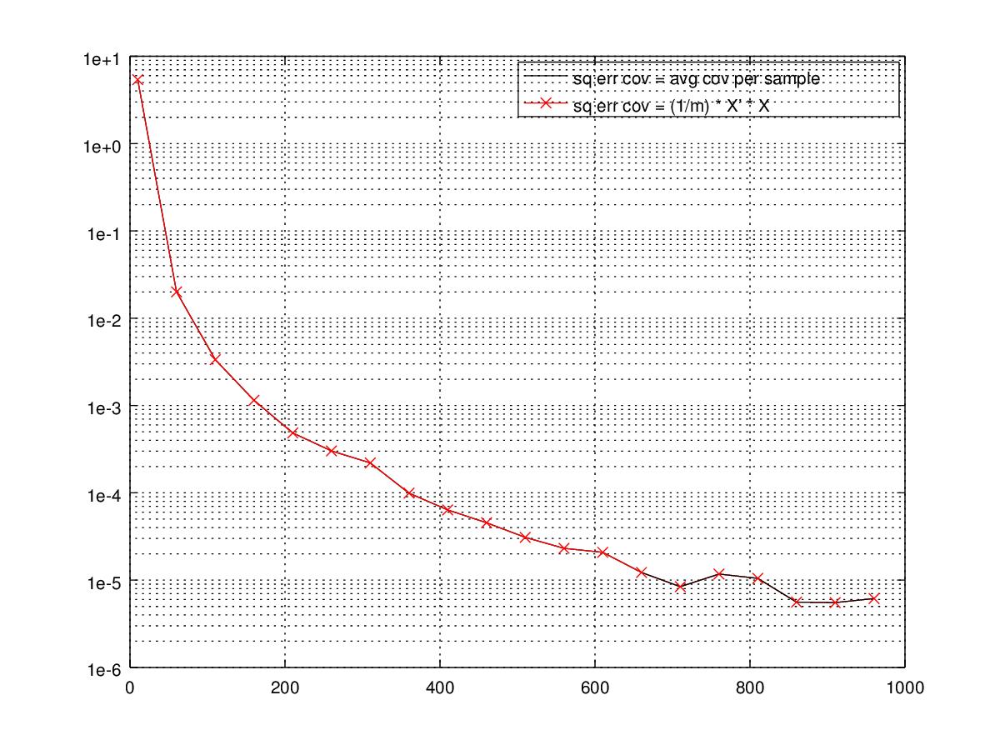

Computing covariance
For a given m x n matrix $X = {X_{ij}}$, where each row is a sample, each column is a zero-mean feature, the normal way of computing covariance matrix is
$$ \Sigma = \frac{1}{m} X^T \times X $$
This can be easily understood - $\Sigma_{ij}$ is the covariance between i-th and j-th feature of the dataset. The computation reflects that - $\Sigma_{ij}$ is computed by $(1/m) * <X_i, X_j>$, where $<X_i, X_j>$ is the inner product between column $X_i$ and column $X_j$. Since all features (columns) are zero-mean, this is exactly the definition of covariance between two random variables.
To my suprise, the other way of estimating the covariance is:
$$ \Sigma = \frac{1}{m} \sum_{i=1}^m { {X^{(i)}}^T \times X^{(i)} } $$
where $X^{(i)}$ is a 1xn row vector representing the i-th observed sample in the dataset. What that means is that instead of estimating the covariance matrix feature-wise, i.e., computing covariance values one by one, we're now estimating the entire covariance matrix using each single observation samples, and averaging those estimates ($\frac{1}{m}\sum$). This approach has the benefit that the covariance matrix can be built incrementally!
The below graph demonstrates the squared estimation errors of these two methods compared with the cov() function.

The two lines overlaps perfectly implying they're fundamentally equivelent. And as the sample size gets large, the estimation error gets small.
Here's the code for it (gist):
1 | clc; |